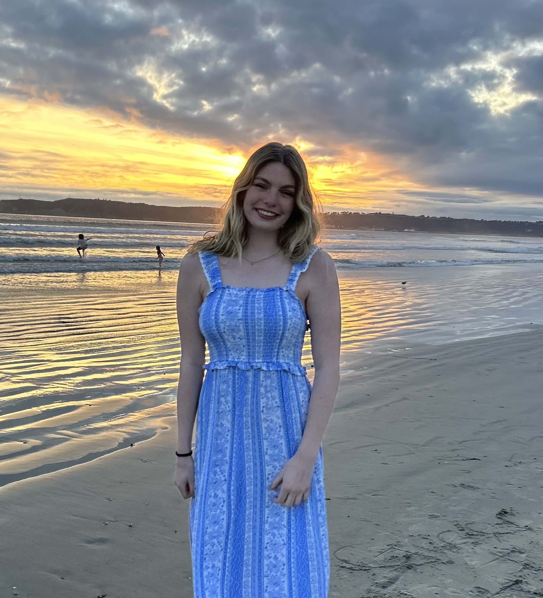

MECHANICAL ENGINEERING · CU BOULDER
Linley Denslow
Passionate learner, ambitious worker.
I am a third year Mechanical Engineering student at CU Boulder with a minor in Computer Science. I enjoy engineering because I am passionate about learning. I have loved gaining and perfecting new skills throughout my coursework and watching those skills come together to create tangible, working projects.
Explore My Projects →
About Me
Within mechanical engineering, I am primarily interested in the construction and energy industry. I would be excited to help contribute to infrastructure that directly benefits communities and work either on-site or within an office position and make use of my problem-solving and communication skills. I hope to really apply myself within an internship or job shadow role where I can gain as much experience and knowledge of an industry within a short period of time.
Outside of engineering, I work on campus as a clerk/barista and serve as Vice President of Membership for my professional technology fraternity, Kappa Theta Pi. In my free time, I enjoy movies, reading, crocheting, art, music, exploring the outdoors, and traveling. My experience in the service industry and in a fraternity executive role has strengthened my organizational, communication, leadership, and adaptability skills. I look forward to applying this combination of technical knowledge and interpersonal skills to new opportunities and collaborative environments.
Technical Skills
FEATURED PROJECT
Heating & Cooling Vest
A team engineering project designed to help regulate the user's comfort during outisde use with flunctuating temperatures. My role as project lead involved coordinating the design process and helping integrate the electronic components into a functional prototype.
View Project Details →